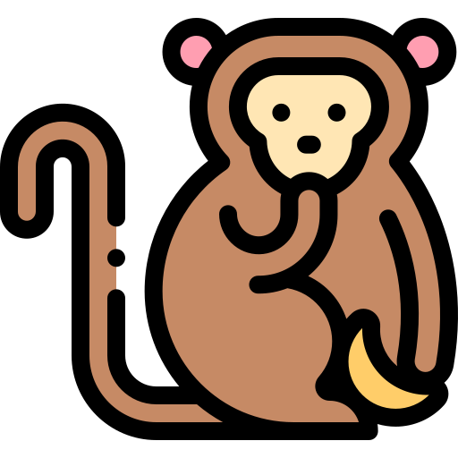

RELAÇÕES FAMILIARES NOCIVAS
OVELHAS e CABRAS podem rejeitar seus filhotes
| O parto prolongado pode levar o animal à exaustão e ter efeitos adversos. Raramente a mãe abandona a sua cria, porém em casos de parto múltiplo ou primíparas a atenção é dispensada em uma única cria e, passado o período crítico de reconhecimento, a cabra rejeita os outros filhotes. No caso da ovelha, se ela permitir que o cordeiro consuma o colostro revela que ela o reconheceu e o aceitou como seu, rejeitando qualquer outro filhote que tente mamar. Dados de mamíferos sugerem que, quando o recurso alimentar é severamente restrito, tornando fêmeas lactantes incapazes de manter seu peso vivo, as mães são mais propensas a rejeitar e abandonar seus filhotes. |
BESOURO que devora a mãe viva
| Alguns insetos desenvolveram métodos macabros de propagar a espécie, assim como o que acontece em besouros Micromalthus debilis. As fêmeas desta espécie, que são parternogênicas, geram suas larvas fêmeas descendentes de forma normal. Porém, o Micromalthus debilis desenvolveu um sistema praticamente idêntico ao dos cecidomiídeos, com uma variação macabra. As fêmeas paternogênicas produzem um único descendente macho, e essa larva se prende à cutícula da mãe durante cerca de quatro ou cinco dias, em seguida insere a cabeça pela abertura genital dela e a devora. |  |
|---|
MOSCAS que devoram a mãe viva
 |
As fêmeas dos cecidomiídeos, que são partenogênicas, param de se desenvolver quando ainda são larvas e se reproduzem sem colocar ovos. A prole desenvolve-se nos tecidos da mãe e não no útero e, sem abastecimento de nutrientes, começa a devorar a própria genitora. Ao longo dos dias, para crescer, a pupa lentamente devora a mãe de dentro para fora, acabando por ocupar-lhe o corpo todo até emergir e deixar para trás somente vestígios do mesmo, iniciando um novo ciclo na reprodução assexuada por partenogênese. |
|---|
ARANHAS que devoram a mãe viva
| Em espécies da aranha Stegodyphus, as fêmeas anexam seus ovos à suas teias e os vigiam até que os filhotes eclodam. Quando eles nascem, a genitora continua a comer, mas regurgita a maior parte de suas refeições como uma sopa nutritiva para sua prole. Quando os filhotes atingem um mês de idade, a aranha mãe permite que sua prole a mate devorando-a lentamente enquanto injeta enzimas digestivas em seu corpo para devorá-la. |
O PERCEVEJO que realiza cópula forçada
| O Xylocaris maculipennis, ou Cimex lectularius, desenvolveu um hábito de cópula forçada que se assemelha à prática do estupro. Aparentemente, em algumas variedades deste inseto o macho fecha a fêmea com um tipo de "rolha" após fertilizá-la para evitar que os outros machos a fertilizem também. Então, certos percevejos adaptaram-se a esse problema perfurando a fêmea durante a relação de modo a evitar o caminho normal e contornar a rolha. Outros, desenvolveram algo ainda mais drástico: o macho perfura e insemina os outros machos à força de modo que, os seus genes sejam "carregados" para as fêmeas quando o macho inseminado for acasalar com elas. |
VESPAS que copulam com as fêmeas antes delas nascerem
| As vespas-do-figo (Blastophaga psenes) são vespas que se hospedam e passam o seu ciclo de vida dentro dos figos: elas nascem, se alimentam das sementes em desenvolvimento, se reproduzem e morrem dentro das frutas. As fêmeas saem da fruta para fazem a polinização de novos figos (que certamente vão hospedar os seus descendentes) e os machos, que não possuem asas, passam todo o ciclo de vida dentro do figo. O problema é que os machos nascem muito mais cedo que as fêmeas, isso faz com que eles convivam com as fêmeas como larvas ainda não nascidas. Então, para procriar, os machos devoram a parede do óvulo que protege as fêmeas e copula com elas antes mesmo de nascerem. |  |
|---|
Pássaro CUCO que mata os irmãos adotivos
 |
O cuco é capaz de parasitismo social. Isso quer dizer que as fêmeas depositam seus ovos nos ninhos de outras aves, onde serão criados por pais de outras espécies. Criar um filhote de cuco no seu próprio ninho representa um grande prejuízo aos cucos pais, uma vez que o filhote de cuco, ao nascer, instintivamente mata seus irmãos de criação lançando todos os ovos antes que eles possam eclodir (ovos do pássaro hospedeiro requerem 15 dias de incubação e o do cuco apenas 12 dias) e competir por alimento. |
|---|
TUBARÃO-TOURO devora os irmãos ainda dentro do útero
| Filhotes de tubarão-touro ou tubarão-cinza (Carcharias taurus) devoram seus próprios irmãos em uma disputa pelo "direito de nascer". Acontece que tubarões-touro chegam a 2,5 metros e dão à luz filhotes de 1 metro. Com isso, pelo tamanho do filhote, a mãe dá à luz apenas, no máximo, dois filhotes por gestação, o que faz com que os mesmos disputem pela vida. Desde 1980, autópsias revelaram embriões dentro do estômago de filhotes. Hoje, é sabido que o canibalismo no útero acontece desde os 5 meses de gestação, onde, até 12 fetos podem começar a "jornada", lutando pela sobrevivência até que só sobre o maior e, possivelmente, algum outro tubarão. |  |
|---|
LOUVA-A-DEUS devora o macho na relação sexual
 |
O canibalismo post coitum do louva-deus não é uma regra geral (cerca de 72% dos machos escapam vivos). Porém, a fêmea desse curioso inseto leva o conceito de “predador sexual” a um outro nível: ela costuma literalmente devorar seu parceiro após o coito para ficar mais fértil: o sacrifício conjugal do macho ajuda a propagar seus genes. Uma pesquisa feita por biólogos americanos demostrou que fêmeas que comem os parceiros botam em média 88 ovos — 50 a mais do que as que não comem, aumentando bastante o número de descendentes. |
|---|
VIÚVA-NEGRA devora macho e os próprios irmãos
| A aranha viúva-negra fêmea pratica canibalismo sexual, comportamento em que a fêmea devora o macho após o acasalamento. Este comportamento pode elevar as chances de sobrevivência da prole. As aranhas machos buscam contornar esta situação detectando substâncias químicas na teia que indicam quais fêmeas estão saciadas e selecionando-as para evitarem ser devorados. No entanto, além do canibalismo sexual, sabe-se que espécies como Latrodectus hesperus também praticam canibalismo entre irmãos. |
PANDAS escolhem um filho para morrer
 |
Caso a fêmea do Panda-gigante reproduza dando cria para gêmeos, ela escolhe somente um deles para cuidar. O outro filhote é rejeitado e abandonado, sem nenhum remorso, na floresta, para se virar sozinho ou morrer. Em zoológicos, esse comportamento é menos comum, porém, inda mais trágico: a decisão entre qual filhote abandonar pode levar um mês e, após acontecer, a mãe impede até mesmo que os tratadores se aproximem do filhote que foi escolhido para ser desprezado. A hipótese aceita é que a escolha se dá porque sua dieta exclusiva de bambu a torna incapaz de produzir leite suficiente para dois filhotes, pois ela não armazena gordura. |
|---|
BONOBOS devoram os próprios filhos para se impor
| O estilo de dominância dos bonobos é incomum entre macacos. Bonobos machos não são dominantes e, embora bonobos fêmeas não apresentam traços típicos de espécies dominantes por fêmeas, a espécie apresenta uma sociedade matriarcal.Conforme a Sociedade Americana de Primatologistas, como os bonobos vivem neste sistema de matriarcado, a melhor maneira que o macho encontrou de se impor é ameaçar o futuro do bando inteiro despedaçando os próprios filhos e os devorando, bem diante da fêmea. |  |
|---|